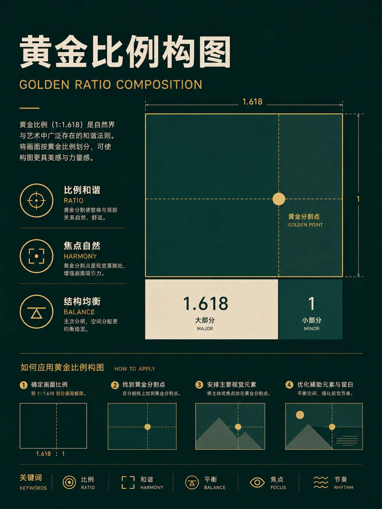

栏宽 61.8 / 38.2
版心宽度乘 0.618 得主栏，剩下的给侧栏。主次分明，侧栏又宽到放得下东西。
No. 002350 种排版 · 互动版
Golden Ratio Composition
把一段长度切成两份，让整体比大段正好等于大段比小段，这个比就是黄金比例 φ ≈ 1.618。它有一个别的比例都没有的数学性质，也背着不少夸张的传说。这一页两样都摆出来，你自己动手量。
。拖动画面旋转，方向键也行。
Extreme and mean ratio
约公元前 300 年，欧几里得在《几何原本》里给它下了定义，叫「外中比」：把一条线段分成长段 a 和短段 b，使
a + ba = ab
左边是「全长比长段」，右边是「长段比短段」。切点从中间往右挪，左边变小、右边变大，只在一个位置两边相等，那时它们都等于 φ。
算一下：设 b = 1，式子变成 a + 1 = a²，解出 a = (1 + √5) ÷ 2 ≈ 1.618。全长为 1 时，长段是 0.618，短段是 0.382。
Self-similarity
虚线框：把原矩形缩小、转 90°，套在第一刀剩下的部分上
拿一个矩形，沿短边切掉一个正方形。剩下的小矩形，和原来的形状一样吗？
大多数比例都不一样：3 : 2 切完变成 2 : 1，16 : 9 切完变成 9 : 7。只有 φ 切完还是 φ，因为
φ − 1 = 1 ÷ φ
所以黄金矩形可以一直切下去，每次只切一个正方形，永远切不完。这叫自相似，是它真正与众不同的地方。
右边数字里的「连分数」记的正是这个过程：每一步切下几个同样大的正方形。16 : 9 是 [1; 1, 3, 2]：一个、一个、三个、两个，切完。φ 每一步都只切一个，写出来是一串没有尽头的 1。
在每个切出的正方形里画一段四分之一圆，连起来就是一条近似的黄金螺线。螺线和植物叶序是 003 黄金螺旋构图 的主题。
The numbers
φ =1 + √52
1.6180339887…
无理数，小数永远不循环，也写不成任何分数。
φ² = φ + 1
2.618…
平方等于加一。
1 ÷ φ = φ − 1
0.618…
倒数等于减一。构图里的 61.8% 就是它；38.2% 是 1 − 0.618，也等于 1 ÷ φ²。
φ = 1 +11 + 11 + …
[1; 1, 1, 1, …]
连分数全是 1。这让它成为最难用分数逼近的数：分母一样大时，它的误差总是偏大的那一类。
1, 1, 2, 3, 5, 8, 13, 21…每一项是前两项之和。相邻两项相除，商在 φ 上下来回跳，一次比一次近。
所以 5 : 3、8 : 5、13 : 8 常被当作 φ 的整数近似。排版时要整数，就拿它们用：8 栏和 5 栏、13 像素和 21 像素。
In the frame
黄金分割使整体与局部关系自然、舒适。
具体说：整体比大块，等于大块比小块。画面里只有一个比例在重复，各部分之间就有了呼应。
黄金分割点是视觉落脚处，增强画面吸引力。
起作用的主要是「离开正中」：主体不在中心，画面就有了方向和张力。0.618 能做到，三分点也能做到。
主次分明，空间分配更均衡稳定。
大块 61.8%、小块 38.2%：主次一眼可见，又不像 80 : 20 那样一边倒。
在画面上拖动分割线，主体跟着交点走。
Layout, type, cards
版心宽度乘 0.618 得主栏，剩下的给侧栏。主次分明，侧栏又宽到放得下东西。
从正文字号出发，每级乘同一个比例。比例越大，台阶越陡。
1.618
黄金比例
字号按比例递进
正文用最小的一级。标题和正文差几级、每级差多少，决定了版面是安静还是有冲击力。
px
常见卡片和纸张，各是什么比例。打开叠加，看它们和黄金矩形差多少。
银行卡很接近 φ，但它是按国际标准 ISO/IEC 7810 定的尺寸，没有资料说是照着 φ 设计的。
Myths, kindly
黄金比例（1:1.618）是自然界与艺术中广泛存在的和谐法则。
海报原文
这句话说得多了一点。更稳妥的版本是：φ 有真实而漂亮的数学性质；植物的叶序里确实找得到它的身影（见 003）；可许多「名作都用了黄金比例」的说法，是后人拿尺子去画框找出来的。
把它当一把好用的尺子，它很好用。当成美的定律，就说过头了。
欧几里得《几何原本》定义「外中比」，纯几何，没谈美。
帕乔利出版《神圣比例》，达·芬奇为它画了多面体插图。
德国数学家马丁·欧姆的书里出现「黄金分割」这个叫法，目前能查到的最早用例。
费希纳请人挑最顺眼的矩形，说黄金矩形附近最受欢迎。
美国数学家马克·巴尔提议用希腊字母 φ 来记它。
勒·柯布西耶出版《模度》，真的把 φ 和人体尺寸编成了一套建筑尺度。
帕特农神庙的立面是一个黄金矩形
取决于从哪量
画框之前要先选：算不算台阶，量到山墙尖还是檐口。选法不同，比例就不同。也没有古希腊文献说建造时用了它。
《蒙娜丽莎》按黄金矩形构图
事后画线
这些框都是后人画上去的，起止点可以随意挪。没有证据表明达·芬奇这样构图。
肚脐把身高分成黄金比
因人而异
人和人差别很大，量法也不统一。挑出几个接近 1.618 的人，说明不了人体「遵循」它。
人天生觉得黄金矩形最美
结果不一
费希纳 1876 年的实验是这么说的；后来很多人重做，结果时有时无，换个实验方法、换种展示方式，偏好就跟着变。
鹦鹉螺的壳是黄金螺线
形状对，比例不对
它是等角螺线，但每转一圈放大的倍数和黄金螺线不一样。螺线的事见 003。
那它在哪儿是真的
工具
在你决定用它的时候。勒·柯布西耶的模度、版面里的 61.8 / 38.2 分栏、字号阶梯，都是设计者主动选了它，而不是在自然里「发现」了它。
The poster

整体比大块，等于大块比小块。
同一个比例在各处反复出现。
61.8 对 38.2，有主有次，不一边倒。
主体离开正中，落在分割线的交点附近。
大小按 φ 一级级递进，每级是前两级之和。
本页的版心按 1 : 1.618 分栏，字号、间距按 φ 的次方递进。